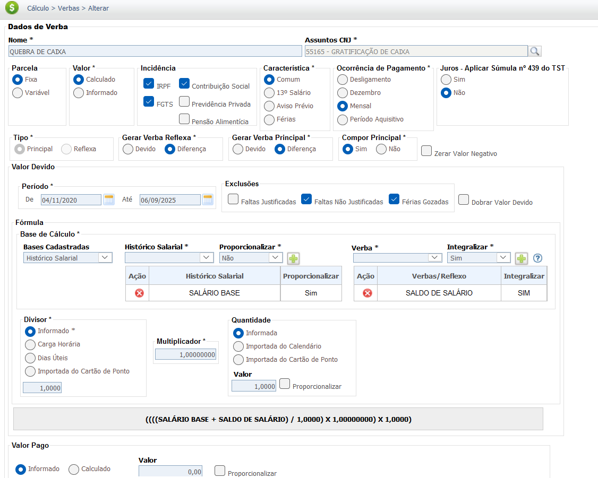
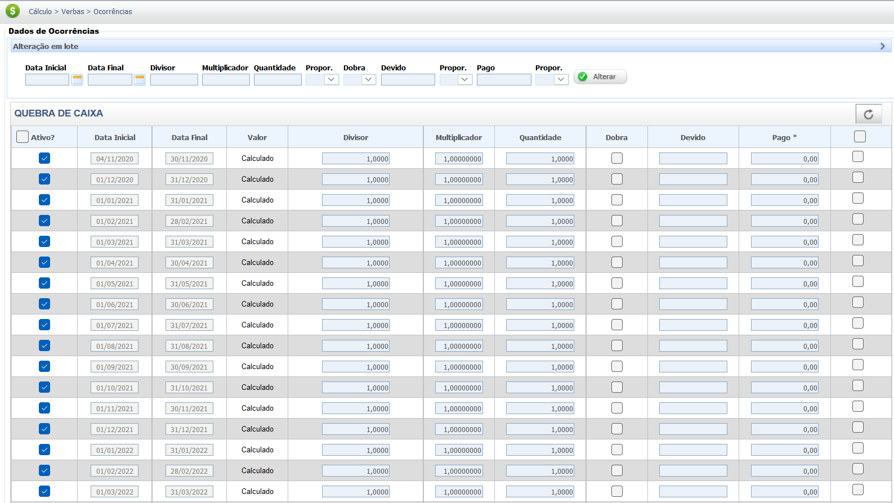

Gratificação de Caixa (Quebra de Caixa)
A Gratificação de Quebra de Caixa é uma parcela salarial paga habitualmente ao empregado que lida com manuseio de dinheiro (Ex: caixa de banco, comércio) para cobrir eventuais diferenças ou erros no fechamento do caixa. Seu objetivo é compensar o risco financeiro do empregado.
A Quebra de Caixa, embora não encontre disposição especifica na CLT, possui entendimento jurisprudencial de quando paga com habitualidade, possui natureza salarial e, por isso, integra o salário para todos os efeitos legais, gerando reflexos em verbas como 13º salário, férias e FGTS, conforme o entendimento da justiça majoritário (exceto se houver cláusula expressa em norma coletiva em sentido contrário).
Base Legal e Jurisprudência
A natureza salarial da gratificação de quebra de caixa, quando paga com habitualidade, é regulamentada pela CLT.
Fontes Normativas
Consolidação das Leis do Trabalho (CLT):
- Artigo 457, § 1º:
"Integram o salário a importância fixa estipulada, as gratificações legais e as comissões pagas pelo empregador."
Jurisprudência
Natureza Salarial
Súmula nº 247 do TST
QUEBRA DE CAIXA. NATUREZA SALARIAL.A parcela paga aos bancários sob a denominação "quebra de caixa" possui natureza salarial, integrando o salário do prestador de serviços, para todos os efeitos legais.
Observação: Destaca-se que o entedimento mencionado acima é utilizado por analogia por outras atividades, portanto, não sendo um direito único para bancários.
Base de Cálculo e Deduções
Base de Cálculo
A Gratificação de Quebra de Caixa é um valor geralmente fixo pago mensalmente. Para o cálculo dos reflexos (Ex: 13º salário, férias), usa-se o valor nominal da gratificação no mês da apuração da verba ou a média, se o valor for variável.
Deduções
Por ter natureza salarial, a Quebra de Caixa incide no cálculo das deduções legais, como a contribuição para o **INSS (Instituto Nacional do Seguro Social)** e o **Imposto de Renda (IRPF)**. Essas deduções são aplicadas sobre o valor total da remuneração, que é a soma do salário base e da gratificação de caixa.
**Exemplo de Deduções (INSS e IR):**
Vamos considerar um salário-base de **R$ 3.500,00** e uma gratificação de quebra de caixa de **R$ 500,00** no mês.
- **Remuneração total (Base de Cálculo):** R$ 3.500,00 + R$ 500,00 = **R$ 4.000,00**
- **Dedução de INSS:** Com base na tabela progressiva, a alíquota de INSS para essa faixa de remuneração (considerando a regra do teto e alíquotas) seria de, por exemplo, **R$ 480,00**.
- **Base de cálculo para IRPF:** A remuneração total menos a dedução do INSS: R$ 4.000,00 - R$ 480,00 = **R$ 3.520,00**.
- **Dedução de IRPF:** Se a alíquota for de, por exemplo, **15%** e a parcela a deduzir for de **R$ 370,40** (valores hipotéticos), o IR será: (R$ 3.520,00 x 0,15) - R$ 370,40 = **R$ 528,00** - R$ 370,40 = **R$ 157,60**.
As alíquotas e as faixas de dedução do INSS e do IRPF mudam periodicamente. O exemplo acima é apenas uma simulação.
Verbas Reflexas
A Quebra de Caixa, por possuir natureza salarial quando paga com habitualidade, deve ser adicionada ao salário base para calcular todas as verbas que são apuradas sobre a remuneração (Art. 457, § 1º, da CLT). Confira as principais verbas reflexas:
A integração da Quebra de Caixa na remuneração é essencial para garantir que o cálculo de verbas contratuais e rescisórias reflita a correta base remuneratória do empregado. Confira as principais verbas que recebem o reflexo da Quebra de Caixa:
| Verba Trabalhista | Reflexo da Quebra de Caixa |
|---|---|
| 13º Salário | Integra o cálculo do 13º Salário (integral e proporcional). |
| Férias + 1/3 | Integra o cálculo das Férias (vencidas e proporcionais) e o adicional de 1/3. |
| Aviso Prévio | Integra a base de remuneração para cálculo do Aviso Prévio (trabalhado ou indenizado). |
| FGTS (Depósito Mensal e Multa) | Incide sobre a gratificação, compondo a base de cálculo para o depósito mensal de 8% e para a Multa de 40%. |
| Horas Extras | Compõe o salário-hora para o cálculo, se devidas. |
Atenção: A Gratificação de Quebra de Caixa, por ter natureza salarial (Art. 457, § 1º, da CLT), integra o cálculo de todas as verbas que são calculadas sobre a remuneração, exceto se houver cláusula expressa em norma coletiva em sentido contrário.
Calculadora (Simulação)
Utilize esta ferramenta para simular o valor do 13º Salário, incluindo o reflexo da Quebra de Caixa, considerando a média se a gratificação não foi paga durante todo o ano.
Fórmula de Cálculo
Salário-Base + (Valor Quebra de Caixa / Meses Pagos / 12)
Lançamento no PJe-Calc
A seguir, confira o passo a passo para o lançamento da verba no PJe-Calc.
ATENÇÃO: Como a verba "Quebra de Caixa" não está cadastrada no PJe-Calc, faz-se necessário cadastra-lá. Para isso utiliza-se a opção "Manual".
-
Acessar Verbas e Escolher Lançamento: No menu de
navegação à esquerda, clique na opção Verbas para iniciar o lançamento. Após o
comando, será exibida a tela para escolha do Lançamento da Verba. Escolha a opção
Manual.

-
Acessar o cadastro de configuação da Verba: O sistema
exibirá a tela de parâmetros da verba com os campos em branco para preenchimento. Cadastre o
nome da verba e escolha entre os Assuntos CNJ a opção relativa ao novo cadastro. Preencha
devidamente os demais parâmetros e ao final clique no botão Salvar.

-
Quadro de Verbas e Ações: Após o cadastramento da
nova verba, o sistema exibirá um quadro
com os campos:
- Ações - contendo as opções de configurações da verba selecionada (parâmetros,
ocorrências e exclusão)

-
- Parâmetros da Verba

-
- Ocorrências da Verba

-
- Excluir

- Verba Principal - verba selecionada para lançamento.
- Verba Reflexa - em que ao clicar no botão Exibir serão listadas todas as verbas reflexas ligadas a Verba Principal.
- Parametrização da Verba: Ao clicar no botão Parâmetros da Verba serão exibidas todas as configurações necessárias para a parametrização da Verba Principal. 
- Registro de Ocorrências: Ao clicar no botão Ocorrências da Verba serão exibidas todas as configurações necessárias para registro das ocorrências da Verba Principal. 